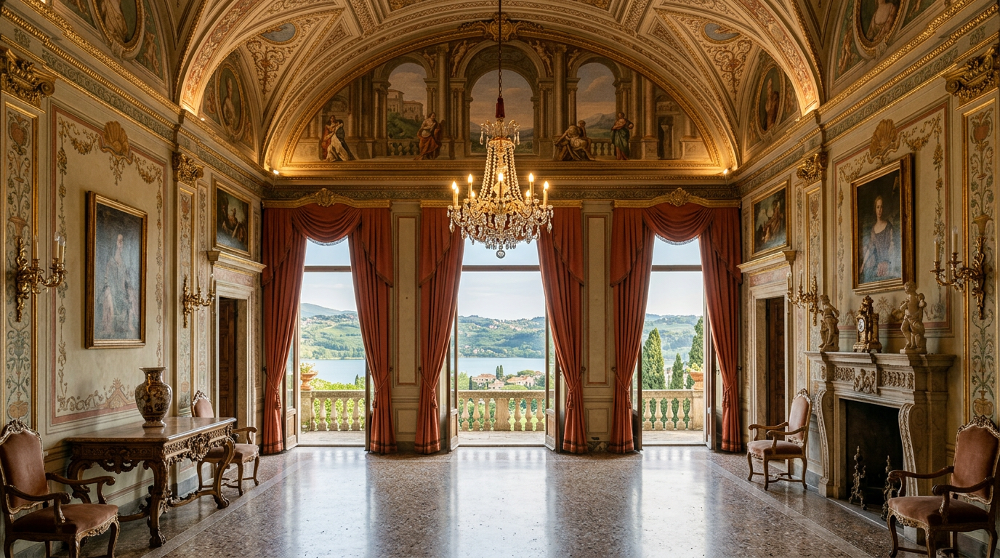

Primavera 1626 — il primo Papa in villeggiatura.

Il 10 maggio 1626 un corteo papale lasciò Roma diretto ai Colli Albani. A guidarlo era Urbano VIII Barberini, che quel giorno diventava il primo Papa a villeggiare nel palazzo di Castel Gandolfo. Da allora, con lunghe pause e ritorni, il borgo sul lago è rimasto la casa d'estate dei pontefici: quest'anno ha festeggiato quattro secoli.
Un cardinale innamorato del lago
Prima ancora di salire al soglio, il cardinale Maffeo Barberini aveva scelto Castel Gandolfo per le sue vacanze, attratto dalla sua “incomparabile posizione panoramica” e convinto che fosse “il luogo più salubre dei castelli romani”. Si era fatto costruire una modesta abitazione presso le mura, al piano superiore della torre che ancora sovrasta la Porta romana; anche le sue scuderie, fuori le mura, esistono ancora (Stato della Città del Vaticano).
Il borgo era da poco nelle mani della Chiesa. Nel luglio 1596, sotto Clemente VIII, la Camera Apostolica aveva preso possesso di Castel Gandolfo togliendolo ai Savelli, che non avevano saldato un debito di 150.000 scudi; il 27 maggio 1604 un decreto concistoriale lo aveva incorporato definitivamente nel dominio temporale della Chiesa (Stato della Città del Vaticano). Ma nessun Papa vi aveva ancora fatto la propria villeggiatura.
Le vacanze in casa propria
Eletto nell'estate del 1623 con il nome di Urbano VIII, Barberini non inventò le vacanze dei papi: per due anni le trascorse a Frascati, ospite del cardinale Scipione Borghese. Volle però dare al pontefice una residenza estiva propria. Il suo biografo Andrea Nicoletti riporta il proposito di “provvedere ancora che i Papi avessero comodità di villeggiare nei propri palazzi, non parendogli conveniente di valersi delle case altrui” (Stato della Città del Vaticano).
Decise così di adattare l'antica rocca dei Gandolfi e dei Savelli. I lavori di sistemazione e ampliamento, condotti tra il 1624 e il 1626 (Vatican News), furono affidati a Carlo Maderno, con Bartolomeo Breccioli e Domenico Castelli come sottoarchitetti. La fortezza fu inglobata nel palazzo; nacquero l'ala verso il lago e la parte sinistra della facciata attuale, fino al portone, e venne disegnato il Giardino del Moro, piccolo e ancora fedele al primo impianto, con aiuole regolari bordate di mirto. Il fiorentino Simone Lagi affrescò la cappella privata, l'oratorio e la sagrestia (Stato della Città del Vaticano).
“Il luogo più salubre dei castelli romani.”Il giudizio del cardinale Maffeo Barberini su Castel Gandolfo
Il 10 maggio 1626
Terminati i lavori, Urbano VIII fissò al 10 maggio 1626 la partenza per la sua prima villeggiatura a Castel Gandolfo (Ville Pontificie), data confermata anche da (Vatican News). Una tradizione locale ricorda invece un ingresso solenne in ottobre, annunciato all'alba dai colpi di cannone e accompagnato da un corteo di carrozze (Vatican News): le due memorie possono convivere, perché il Papa tornava due volte l'anno.
Dopo il 1626, infatti, Urbano VIII rientrò fedelmente alla villa per altri undici anni, in aprile o più spesso in maggio e una seconda volta in ottobre, per soggiorni di due o tre settimane. Le sue giornate erano metodiche: nelle ore di svago non gli mancava la compagnia di letterati ed eruditi, amava le passeggiate a piedi e, nei primi anni, le lunghe cavalcate nei boschi. Perché il governo non si fermasse, riceveva come di consueto ministri e ambasciatori. Nel 1637 una malattia fece temere per la sua vita, e da allora rinunciò alla villeggiatura, convinto con i medici che l'aria più pesante di Roma gli giovasse di più (Stato della Città del Vaticano).
Quattro secoli, con qualche pausa
La tradizione non fu ininterrotta. Il successore Innocenzo X non mise mai piede a Castel Gandolfo; Alessandro VII Chigi vi tornò due volte l'anno e chiamò il Bernini a completare il palazzo; poi, a parte una notte nel 1697, nessun Papa vi villeggiò per 44 anni (Stato della Città del Vaticano). Dal 1870 al 1929 i pontefici non lasciarono il Vaticano, e solo Pio XI riprese a usare la residenza dal 1934 (Wikipedia).
Il legame, però, ha retto. Il 5 e 6 settembre 2026 Castel Gandolfo ha celebrato i 400 anni della presenza dei papi con una messa per il patrono san Sebastiano e un corteo storico in costumi del Seicento, una trentina di figuranti che hanno rievocato l'arrivo in carrozza di Urbano VIII. La festa è stata organizzata da Comune, Parrocchia pontificia e dallo storico locale Luciano Mariani (Vatican News).
Chi visita oggi il Palazzo Apostolico può ancora entrare nella piccola cappella di Urbano VIII (Vatican News): il punto di partenza di una storia lunga quattrocento anni.